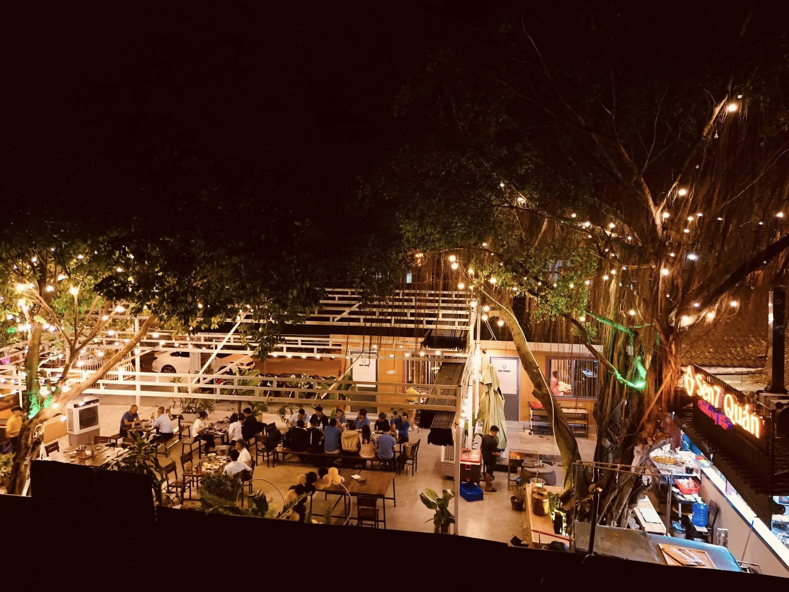

Bạn là một người con xa xứ miền Bắc đang nhớ hương vị quê nhà? Hay bạn là người đang muốn có một trải nghiệm về ẩm thực miền Bắc? Hãy đến ngay với Sen7 Quán.

Mộc mạc và dân dã: Sử dụng vật liệu gần gũi, với bộ bàn ghế gỗ thô mộc, gợi nhớ hình ảnh làng quê Việt Nam. Tinh tế và ấm cúng: Mỗi chi tiết được chăm chút, với ánh đèn vàng dịu nhẹ, tạo cảm giác thân thiện, gần gũi nhưng vẫn duyên dáng. Kết hợp truyền thống và hiện đại: Nội thất và bố trí không gian có sự hài hòa giữa nét truyền thống Việt Nam và phong cách hiện đại, tạo nên cảm giác vừa hoài niệm vừa sang trọng.

Tại đây sẽ làm bạn thoả mãn với những món ăn đặc trưng của ẩm thực miền Bắc: từ bát phở đậm vị; đĩa bún chả bắt mắt cho đến món chả cá Lã Vọng thơm nức mũi. Ngoài ra còn có những mâm cơm mang theo đặc trưng của các tỉnh phía Bắc như: mâm cơm làng Vũ Đại, mâm cơm Hải Phòng, mâm cơm Nam Định,… tất cả món ăn đều được chế biến kỹ lưỡng với tinh thần giữ trọn hương vị của ẩm thức đất Bắc – một hương vị thanh, đậm hài hoà nhưng không gắt. Không chỉ chỉnh chu trong các món ăn, Sen7 quán còn mang đến cho thực khách một không gian làng quê, ấm cúng thông qua việc sử dụng bộ bàn ghế gỗ mộc, chiếc mẹt tre đựng bát đũa vô cùng giản dị. Chính những điều đó đã gợi nên một cảm giác rất “Bắc” ngay khi bước vào quán.
Facebook: Sen7 Quán
Giờ mở cửa: 11:00-14:00 và 18:00-22:00
SĐT: 096 339 12 12
Địa chỉ: 101, Hẻm 6, Nguyễn Chí Thanh, TP. Tây Ninh
Về đầu trang{kind=link}